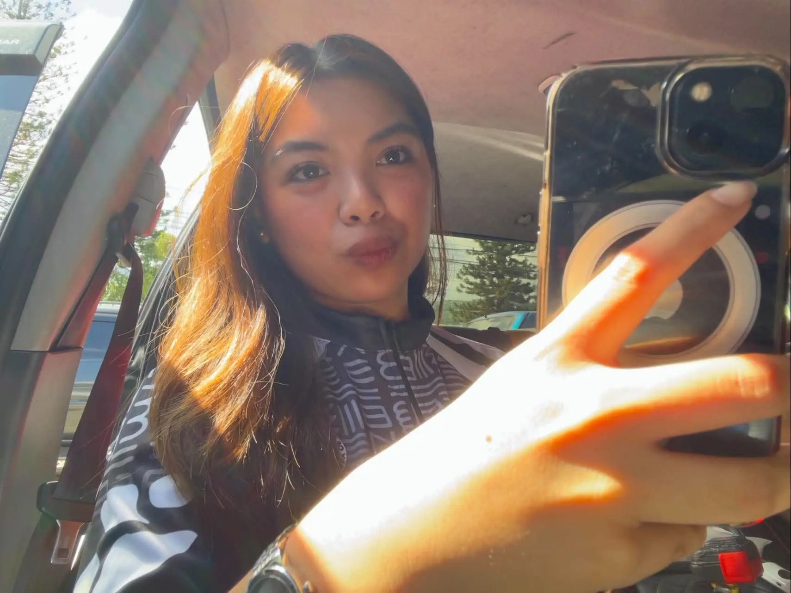

PROJECT 01

Personal Portfolio Website
A personal website created using HTML and CSS to introduce myself, showcase my interests, and share my journey as an IT student.
HELLO, WELCOME TO MY PORTFOLIO
Hi! I'm Kirstein Chey, an IT student who loves exploring new things and learning along the way. I'm still discovering what I'm capable of, trying new experiences, and finding ways to improve myself. I believe that every experience is a chance to learn, grow, and become better.
Explore My Work Get to Know Me01 / ABOUT KIRSTEIN

I’m Kirstein, often called Kishi. I’m an Information Technology student at Benguet State University (BSU). I’m still learning new things and exploring my course, even though it wasn’t what I originally planned to take. Being in a field I didn’t initially want to pursue isn’t always easy, especially when lessons get challenging. Still, I choose to do my best, learn at my own pace, and improve little by little.
Outside school, I enjoy reading books, going on long drives, listening to music, and spending time with the people close to me. I want to improve my grades because I enjoy life so much, hahaha! I’m still figuring things out, but I’m excited to see how much I can achieve along this journey.
02 / WHAT I DO
These are some of the technologies and areas I am currently exploring and developing.
03 / MY STUDENT LIFE
A collection of projects that represent my learning journey in programming and web development.
PROJECT 01
A personal website created using HTML and CSS to introduce myself, showcase my interests, and share my journey as an IT student.
PROJECT 02

As an IT student, I am learning how to write code, understand programming concepts, and solve problems step by step. Some activities take more time and effort than others, but every exercise teaches me something new. Although programming can be challenging, I want to keep practicing and become more confident in understanding and writing code.
04 / GET IN TOUCH
I'm always open to learning, sharing ideas, and connecting with people who enjoy technology and creativity.
Send Me an Email